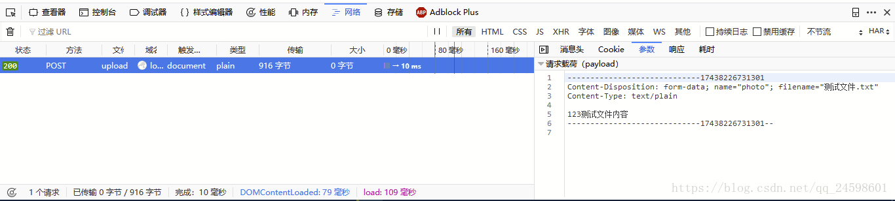

Servlet3.0使用getPart/getParts实现单文件和多文件上传
发布时间：
本文字数：620 字 阅读完需：约 2 分钟
一、使用工具：
（1）Firefox浏览器
（2）java IDE
二、实现单文件上传
（1）
package com.servlet;
import java.io.IOException;
import javax.servlet.ServletException;
import javax.servlet.annotation.MultipartConfig;
import javax.servlet.annotation.WebServlet;
import javax.servlet.http.HttpServlet;
import javax.servlet.http.HttpServletRequest;
import javax.servlet.http.HttpServletResponse;
import javax.servlet.http.Part;
@WebServlet("/upload")
@MultipartConfig // 1.设置Servlet可以处理Multipart请求
public class UploadFileServlet extends HttpServlet {
private static final long serialVersionUID = 1L;
protected void doPost(HttpServletRequest request, HttpServletResponse response)
throws ServletException, IOException {
// 2.获取文件保存的路径
String savePath = this.getServletContext().getRealPath("Files");
// 3.获取form表单的Multipart请求的文件的name属性
Part part = request.getPart("photo");
// 4.获取原文件名
/*
* 经过过request请求信息的分析， 原文件名在头信息的Content-Disposition中 所以获取Content-Disposition的值如下
* form-data; name="photo"; filename="测试文件.txt"
*/
String header = part.getHeader("Content-Disposition");
int start = header.lastIndexOf("=");
String fileName = header.substring(start + 1)
.replace("\"", "");
// 5.保存到第二步获取的文件保存路径下
if (fileName != null && !"".equals(fileName)) {
part.write(savePath + "/" + fileName);
}
}
}
这里需要注意的有三点：
一是 @MultipartConfig 这个注解必须加上，不加不行；
二是通过 getPart(Stirng name) 方法获取文件，其中 name 为jsp页面中的 input标签的name属性；
三是为什么要这样获取文件名，这是因为 Servlet3.0 中的 Part 类没有获取上传文件名的方法，然后通过Firefox分析得出header中的 Content-Disposition 包含有文件名。下图
（2）JSP代码
<form action="${pageContext.request.contextPath }/upload" method="post"
enctype="multipart/form-data">
<input type="file" name="photo">
<input type="submit" value="上传">
</form>
三、实现多文件上传
（1）Servlet
package com.servlet;
import java.io.IOException;
import java.util.List;
import javax.servlet.ServletException;
import javax.servlet.annotation.MultipartConfig;
import javax.servlet.annotation.WebServlet;
import javax.servlet.http.HttpServlet;
import javax.servlet.http.HttpServletRequest;
import javax.servlet.http.HttpServletResponse;
import javax.servlet.http.Part;
@WebServlet("/upload")
@MultipartConfig // 1.设置Servlet可以处理Multipart请求
public class UploadFileServlet extends HttpServlet {
private static final long serialVersionUID = 1L;
protected void doPost(HttpServletRequest request, HttpServletResponse response)
throws ServletException, IOException {
// 2.获取文件保存的路径
String savePath = this.getServletContext().getRealPath("Files");
// 3.获取form表单上传的多个文件
List<Part> parts = (List<Part>) request.getParts();
//4.循环遍历多个文件
for(Part part : parts) {
// 5.获取原文件名
/*
* 经过过request请求信息的分析， 原文件名在头信息的Content-Disposition中 所以获取Content-Disposition的值如下
* form-data; name="photo"; filename="测试文件.txt"
*/
String header = part.getHeader("Content-Disposition");
int start = header.lastIndexOf("=");
String fileName = header.substring(start + 1)
.replace("\"", "");
// 6.保存到第二步获取的文件保存路径下
if (fileName != null && !"".equals(fileName)) {
part.write(savePath + "/" + fileName);
}
}
}
}
要实现多文件上传只需要在单文件上传的的基础上改一下方法，通过 getParts() 方法获取多个文件，然后依次处理就好。
（2）JSP代码
<form action="${pageContext.request.contextPath }/upload" method="post"
enctype="multipart/form-data">
<input type="file" name="photo" multiple="multiple">
<input type="submit" value="上传">
</form>
注意：input 标签多了一个属性 multiple=“multiple”
四、总结
要实现单文件上传只要使用方法 getPart(Stirng name)，实现多文件上传需要在增加Jsp页面 input 标签的 multiple=“multiple”，将 getPart(Stirng name) 方法改为 getParts() 方法，同时遍历文件就可以了。